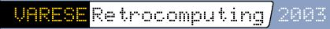

|
 |
Latest
update:
07.04.2007
|
 |
 |
|
E-mail troubles solved
The return of the spam flooding has informed us that our beloved email address has started to work again. If you have to tell us something, this is the right moment ;-)
RealSpectrum R14B available
Ok, we promised that R14 was the very last version of RealSpectrum but we lied: here is a tiny update
that fixes a small but possibly annoying bug in the RZX menu (RS32 only!), plus it brings a new
feature: CodeMasters CD emulation. Go on with the official release notes for more information!
MakeTZX 2.33 and CSW 2.00 released
We have updated our toolset for TZX conversions. The new versions include new features and bugfixes, which you can check here. As usual, surf to the MakeTZX page for the downloads. Brief release notes are available here.

We will attend the first Varese Retrocomputing conference
held in Varese, Italy, on Sunday April 27th. During the presentation we'll show a preview of
RealX, our next-generation emulator which will soon replace RealSpectrum.
For more details about the conference program and location, please click on the title banner
to be taken to the official website (in Italian).
Il 27 Aprile saremo al Varese Retrocomputing 2003,
durante il quale mostreremo per la prima volta un'anteprima del nostro nuovo
emulatore RealX, il successore di RealSpectrum. Siete tutti invitati alla conferenza,
dove ci saranno moltissimi pezzi rari sullo Spectrum; l'ingresso e' gratuito!
Per maggiori informazioni cliccate sul banner del titolo.
RealSpectrum beta 13 "Katun" for DOS and Windows
Here we go with another update of our Spectrum emulator, this time in two versions: for DOS and for Windows. Get it from the usual download page and don't forget to read the release notes for the full list of changes since the previous version.
|
|